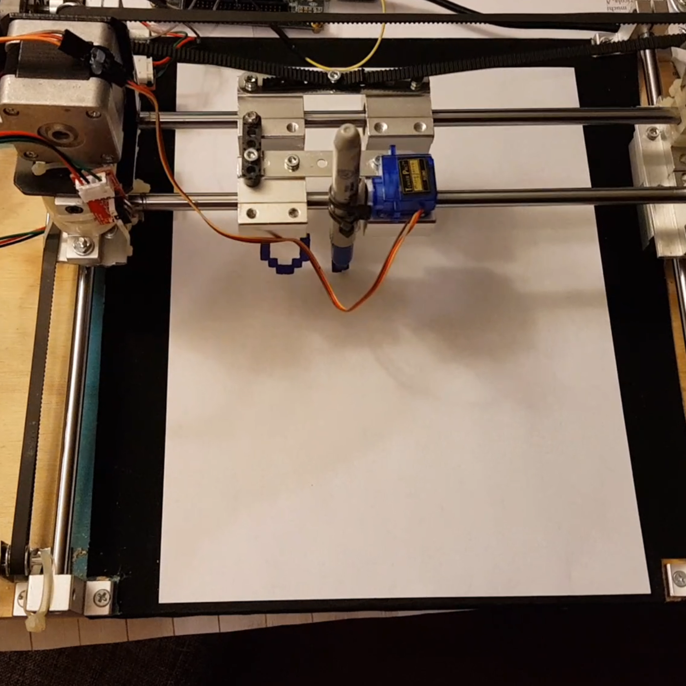

Plotter prototype.
I designed and built a bitmap plotter with support for 2D image transformations and manipulation within an FPGA using the parallel constructs present in the VHDL language. It features a modular and extensible hardware-centric design.
This project went on to win first place at the 2020 UNAM VLSI design contest.
Demo of the plotter prototype.